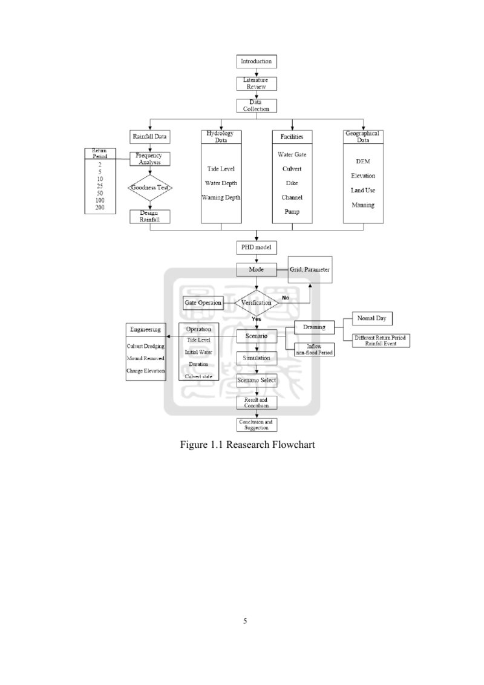
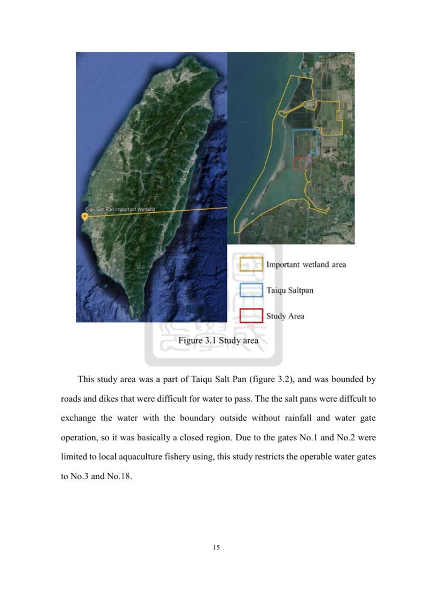
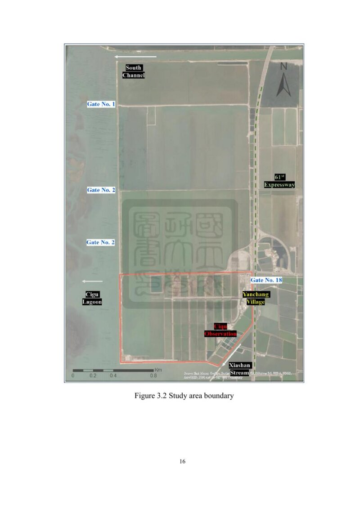
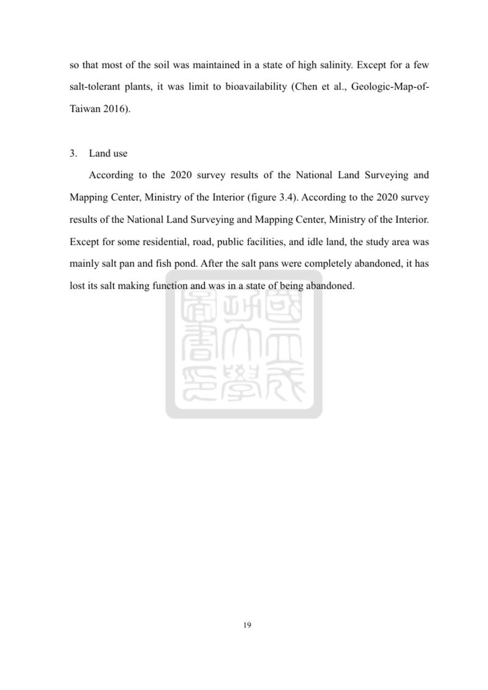
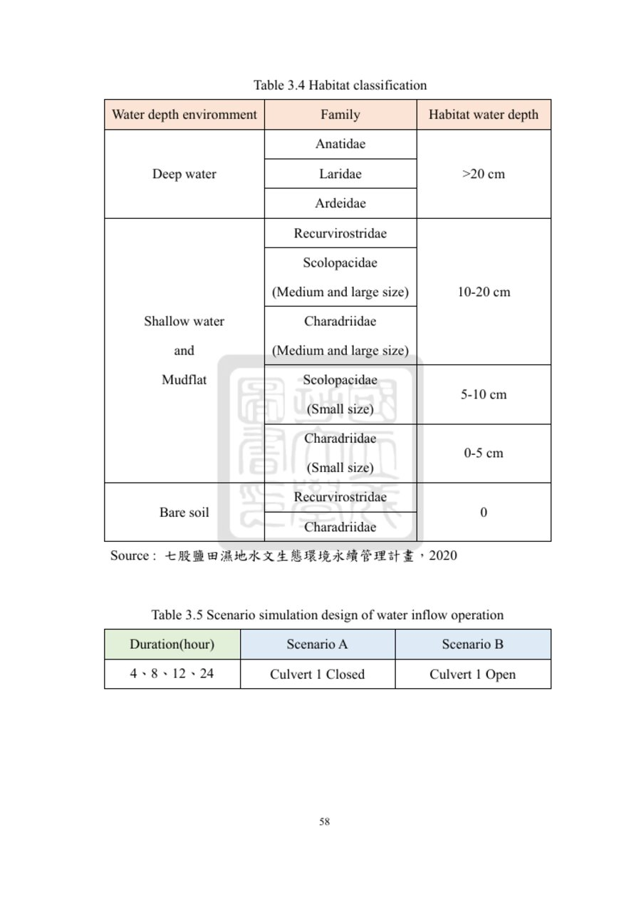
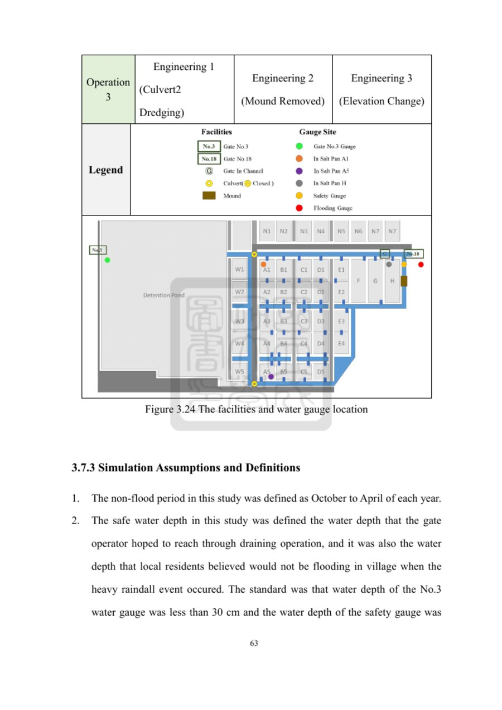

本頁為分章逐步全文翻譯（第1–4章英中對照）。原文圖表以真實 JPG 檔案存放於 images/ 資料夾。第4章為結果與討論的精要整理。
Chapter 1 Introduction 第1章 緒論
1.1 Background 背景
The East Asian-Australasian Flyway has the most abundant migratory bird species, including many threatened species. Habitat loss has reduced populations. Taiwan is a key stop-over; >50% of black-faced spoonbills (IUCN endangered) winter on the SW coast, most in Qigu, Tainan.
東亞–澳洲遷飛路線擁有全球最豐富的候鳥物種。棲地喪失使族群減少。台灣為重要停歇地；全球超過50%的黑面琵鷺（IUCN瀕危）於西南沿海度冬，台南七股最多。
Qigu Salt Pan Wetland (1976 ha) was Taiwan's largest salt pan. History from Ming–Zheng through Japanese occupation to Taiwan Salt Factory; closed May 2002 (338 years). National important wetland 2007 (Taijiang NP) — core SW conservation site and main spoonbill overwintering habitat.
七股鹽田濕地（1976公頃）曾為台灣最大鹽田。歷史自明鄭、日治至製鹽總廠，2002年5月停曬。2007年公告為國家級重要濕地，為西南沿海核心保育區及黑面琵鷺主要度冬棲地。
Closed designs with culverts, gates, channels. After abandonment facilities failed: flood-season high water + siltation risks village flooding; non-flood dry pans cause poor quality and high salinity, limiting bioavailability.
早期封閉式設計設有涵洞、水門、渠道。廢曬後設施失能：汛期高水位與淤積造成村落淹水風險；非汛期乾涸導致水質不佳、鹽度升高，限制生物可利用性。
1.2 Motivation and Purpose 研究動機與目的
PHD Model at Taiqu salt pan for gate-operation and engineering scenarios (culvert dredging, mound removal, elevation change). Aims: (1) long-term watergate strategy; (2) balance flood prevention and habitat quality.
於台區鹽田以PHD模式模擬水門操作與工程情境（涵洞疏通、擋土移除、改變高程）。目標：（1）建立長期水門策略；（2）平衡防洪與棲地品質。

圖 1.1 研究流程圖（原文頁面截圖） / Figure 1.1 Research Flowchart
Chapter 2 Literature Review 第2章 文獻回顧
2.1 Wetland Definition 濕地定義
Ramsar: marsh, fen, peatland or water — natural/artificial, permanent/temporary, static/flowing, fresh/brackish/salt — including marine ≤6 m at low tide. Taiwan Wetland Conservation Law (2013) similar.
《拉姆薩公約》：天然或人工、永久或暫時、靜止或流動、淡水／微鹹／鹹水的沼澤、泥炭地或水域，含低潮≤6公尺海域。台灣《濕地保育法》（2013）定義相近。
2.2 Environmental Factors 環境因子
Wetlands ~3% land, ~40% ecosystem services; area −35% (1970–2015). Ma et al. (2010): depth, fluctuations, vegetation, salinity, landforms, food, area, connectivity. Tidal restoration quickly recovers arthropods; larger tidal area raises fish fullness.
濕地約占陸域3%、提供約40%生態系統服務；1970–2015年面積減少約35%。Ma等人（2010）：水深、波動、植被、鹽度、地形、食物、面積、連結性。潮汐復育可快速恢復節肢動物；較大感潮水域提高魚飽滿度。
2.3 Gate Operation Impact 水門操作影響
Rocha et al. (2016): 7-month high water raised benthos; ~6% estuary birds after drain. Kuo & Wang (2018) Budai: ~12,600 m³ / 5.5 h improved climate regulation & biodiversity services. Wang et al. (2020): short ops create diverse depth/salinity without community flood risk.
Rocha等人（2016）：高水位7個月底棲上升，排水後約6%河口水鳥利用。郭與王（2018）布袋：5.5小時約12,600 m³，提升氣候調節與生物多樣性服務。王等人（2020）：短操作創造多樣水深／鹽度，不增加社區淹水風險。
2.4 PHD Model PHD模式
PHD Model (Chen et al., 2007): physical quasi-2D, Cunge + GIS. Applied at Budai by Kuo (2015) and Peng (2017).
PHD模式（陳等人，2007）：物理準二維、Cunge理論＋GIS。郭（2015）、彭（2017）應用於布袋鹽田。
Chapter 3 Research Area and Methods 第3章 研究區與方法
3.1 Study Area 研究區
Taiqu Salt Pan, Yancheng Li, Qigu, Tainan. National important wetland (2007). Bounds: South Channel (N), Xiashan estuary (S), Hwy 61 (E), Qigu Lagoon (W). Gates No.1–3, 18; operable No.3 & 18 only. Closed without rain/gate op. Jianan Coastal Uplift Plain, slope 1/800–1/1000.
台南七股鹽埕里台區鹽田。2007年國家級重要濕地。北南渠道、南下山溪河口、東61號、西七股潟湖。水門No.1–3、18；僅操作No.3與18。無雨／不操作時封閉。嘉南沿海隆起平原，坡度1/800–1/1000。

圖 3.1 研究區位置（原文頁面截圖） / Figure 3.1 Study area

圖 3.2 研究區邊界（原文頁面截圖） / Figure 3.2 Study area boundary
3.2 Facilities and Gate Operation 設施與水門
Culverts, gates, channels, detention pond. Culvert 2 (A5) silted; Culvert 1 under road to pond; mound H–village blocks backflow. Practice: No.3 low-tide drainage; No.18 monthly high-tide inflow (sewer flush); No.44 (2020) isolates village in heavy rain. Scenarios: 2 inflow + 6 monthly drainage + return-period rain; engineering: dredging, mound removal, elevation change — all PHD.
涵洞、水門、渠道、蓄水池。涵洞2（A5）淤積；涵洞1在通往蓄水池道路下；H與村落間擋土防回流。實務：No.3低潮排水；No.18每月高潮引水；No.44（2020）豪雨隔離村落。情境：2種引水＋6種月別排水＋重現期降雨；工程：疏通、擋土移除、改變高程——皆PHD模擬。

圖 3.10 研究區內設施（原文頁面截圖） / Figure 3.10 The facilities in study area
Chapter 4 Results and Discussion 第4章 結果與討論
4.1 Data Collection and Survey Results 資料蒐集與調查結果
Water-depth monitoring in 2019 showed that most salt pans were completely dry from January through the non-flood season. Depths only rose after the flood season began in May and largely returned to dryness by October–December (except pan W4). The non-flood period (October–March) coincides with the peak overwintering season of migratory birds. Prolonged dryness and barren conditions are therefore unfavorable for bird use.
2019年水深監測顯示，多數鹽田在1月至非汛期幾乎完全乾涸；5月進入汛期後水深才上升，10–12月（除W4外）又大致回到乾涸狀態。非汛期（10月–翌年3月）正好是候鳥度冬高峰，長期乾旱與裸露環境不利於鳥類利用。
Tide observations outside Gate No.3 (Qigu Lagoon) and Gate No.18 (Xiashan Stream) showed an approximate 1-hour lag relative to the Jiangjun station. The lagoon tide range is smaller than Jiangjun; Xiashan mean water is higher. Gate No.3 is suitable for drainage at the lowest lagoon water level. Gate No.18 remains higher than the pans almost all day, so it can only be used for inflow, not drainage. High correlation (R² = 0.96) allows conversion of Jiangjun data to lagoon levels.
水門No.3（七股潟湖）與No.18（下山溪）外側潮位較將軍站約延遲1小時。潟湖潮差小於將軍站，下山溪平均水位較高。No.3適合在潟湖最低潮時排水；No.18幾乎全天高於鹽田水位，只能引水、無法排水。將軍站與潟湖相關性高（R²=0.96），可進行潮位換算。
4.2 Water Gate Inflow Operation 水門引水操作
Field gate operations were conducted in October 2020 and March 2021 for model verification. These tests provided measured water-depth changes used to calibrate and validate the PHD model under real inflow conditions.
2020年10月與2021年3月進行實地水門引水操作，作為模式驗證資料。實測水深變化用於校正與驗證PHD模式在真實引水條件下的表現。
4.3 Model Setting and Verification 模式設定與驗證
The computational grid was constructed over the Taiqu salt-pan domain. Model verification against the October 2020 and March 2021 inflow operations, as well as selected rainfall events, showed acceptable agreement between simulated and observed water levels and extents, confirming that the PHD model is suitable for subsequent scenario analysis.
針對台區鹽田建立計算網格。以2020年10月、2021年3月引水操作及選定降雨事件進行驗證，模擬與觀測水位、淹水範圍吻合度可接受，確認PHD模式適用於後續情境分析。
4.4 Frequency Analysis and Design Hyetographs 頻率分析與設計雨型
Rainfall frequency analysis (including PT3, LPT3, LN2 and other distributions) was performed for the Qigu area. Design hyetographs for various return periods and a 48-hour duration were derived to serve as input for the rainfall-event scenarios.
針對七股地區進行降雨頻率分析（含PT3、LPT3、LN2等分配）。據此建立不同重現期、48小時延時的設計雨型，作為降雨事件情境的輸入條件。
4.5 Simulation Results of Each Scenario 各情境模擬結果
Operation scenarios were grouped into three purposes: (1) non-flood-period water inflow to improve habitat for overwintering birds, (2) drainage without rainfall to manage water levels, and (3) village flood condition under design rainfall.
操作情境依目的分為三類：（1）非汛期引水以改善候鳥度冬棲地，（2）無降雨時排水以調控水位，（3）設計降雨下村落淹水情形。
Inflow operation (non-flood season): Two scenarios were compared. Scenario A closed Culvert 1 (board) so that water from Gate No.18 spread more rapidly into the southern pans; Scenario B left Culvert 1 open for natural flow according to elevation. After 24 h of inflow under Scenario A, total water area increased dramatically (from ~13,700 m² to ~201,500 m²). Habitat types shifted from mostly bare soil to shallow-water classes (5–10 cm and 10–20 cm), which are more favorable for shorebirds.
非汛期引水：比較兩種情境。情境A封閉涵洞1，使No.18來水較快往南部鹽田擴散；情境B保持涵洞1開啟，依高程自然流動。情境A操作24小時後，總水域面積由約1.37萬m²大幅增加至約20.15萬m²，棲地型態由以裸地為主轉變為5–10 cm與10–20 cm淺水環境，較有利於水鳥。
Draining operation: Gate No.3 was opened near the lowest lagoon tide. Simulations for different months showed that timely drainage can lower water levels in the pans and reduce prolonged high-water conditions, while still needing to balance residual habitat value.
排水操作：於潟湖接近最低潮時開啟No.3。不同月份模擬顯示，適時排水可降低鹽田水位、減少長時間高水位，同時仍需兼顧剩餘棲地價值。
Rainfall / village flooding: Under design rainfall events, the model evaluated the extent and depth of flooding that could affect nearby villages. Results indicate that certain gate operations and existing siltation can elevate flood risk if not managed.
降雨與村落淹水：在設計降雨事件下，模式評估可能影響鄰近村落的淹水範圍與水深。結果顯示，特定水門操作與現有淤積若未妥善管理，可能提高淹水風險。
Engineering scenarios (culvert dredging, mound removal between H and the village, elevation adjustments) were combined with the operation strategies. These interventions generally improved water connectivity and the ability to achieve desired depth distributions, while their effect on village flood risk was also quantified. Overall, coordinated gate operation plus selected engineering measures can better balance habitat quality and flood prevention.
工程情境（涵洞疏通、H與村落間擋土移除、高程調整）與操作策略結合後，多能改善水域連通性與達到目標水深分布的能力，同時量化對村落淹水風險的影響。整體而言，協調的水門操作搭配選定工程措施，可較佳平衡棲地品質與防洪目標。

原文第 74 頁 · 模擬結果範例 / Original page 74 – simulation result

原文第 79 頁 · 模擬結果範例 / Original page 79 – simulation result